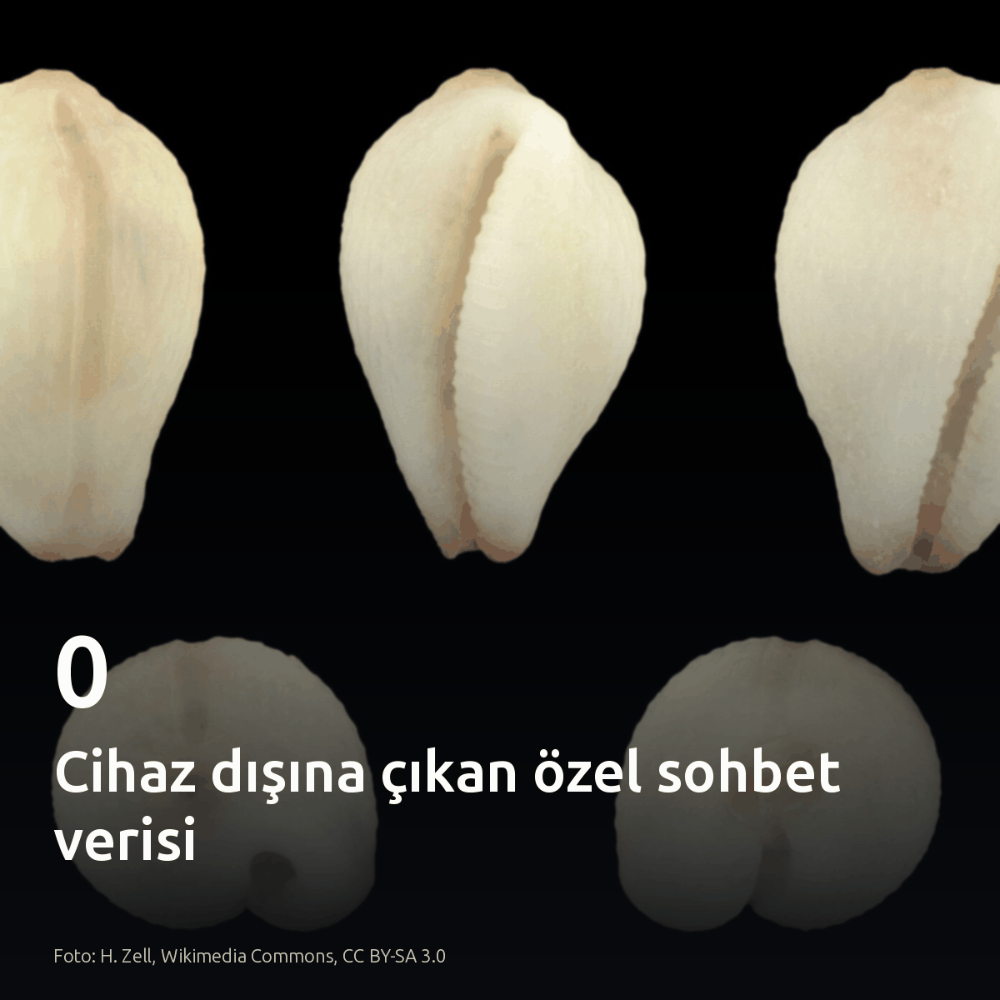
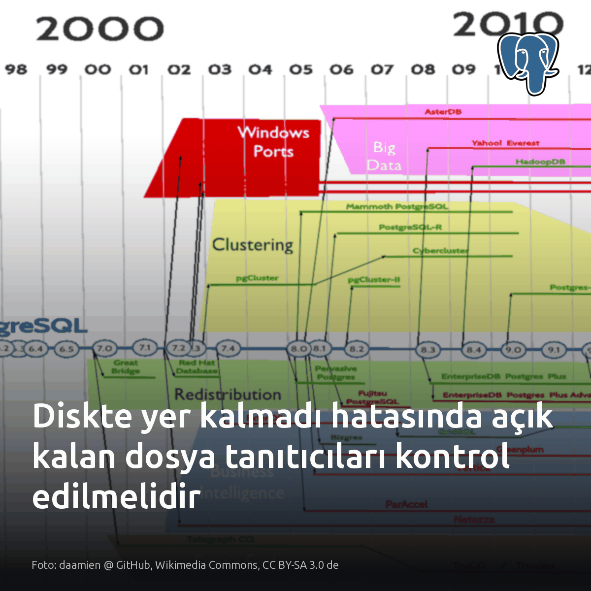
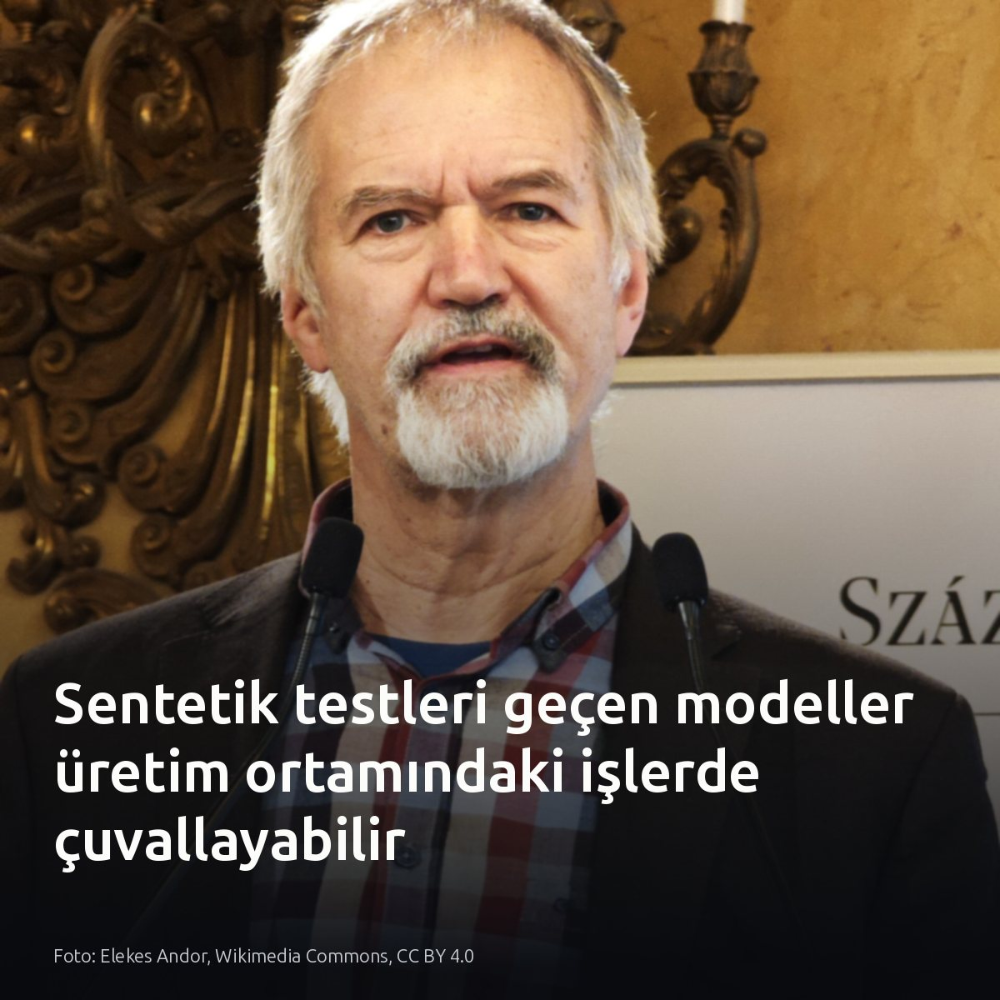
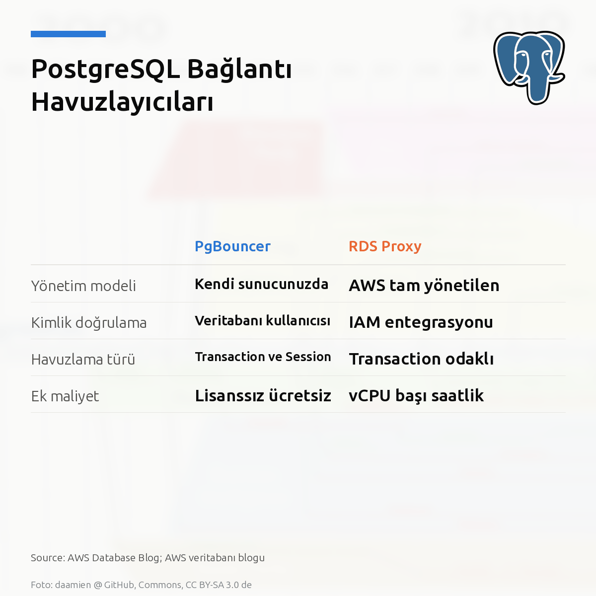

Metni kopyala, kartı indir, LinkedIn'de yapıştır. Bağlantılar gönderiye değil ilk yoruma.

Singapur'da özel sohbetleri denetleyen sistemin sunucuya aktardığı veri: 0 bayt. DeepMind ve GovTech, hafif Gemma modelini doğrudan cihaz üzerinde çalıştırarak dolandırıcılık girişimlerini anında engelliyor. Ağ gecikmesi yok. Merkezi sunuculara kullanıcı verisi taşımadan uç noktada güvenlik sağlamak mümkün. #ondeviceai #dataprivacy #gemmaKartı indir
Kaynak ve detaylar: Google DeepMind & GovTech Singapur duyurusu: https://deepmind.google/blog/on-device-ai-scam-detection-mddi/

Diskte %100 doluluk varken du hiçbir büyük dosya bulamıyorsa sunucu kilitlenmek üzeredir. Log dosyasını silmek alanı boşaltmaz. PostgreSQL süreci tanıtıcıyı açık tuttukça işletim sistemi disk bloklarını serbest bırakmaz. df diski dolu gösterirken du dizinde dosya bulamaz. Sunucuyu yeniden başlatmak sorunu sadece erteler. Çözüm, servisleri körlemesine öldürmeden lsof ile silinmiş açık tanıtıcıları yakalamaktır. Dolu bir dizin üzerine başka dosya sistemi bağlandığında bu tespit geçerli değildir. #postgresql #linux #sysadminKartı indir
Kaynaklar ve görsel referansı: Görsel: daamien @ GitHub, Wikimedia Commons, CC BY-SA 3.0 de Vaka analizi: https://medium.com/@solvytech/linux-system-administration-5-ghost-production-problems-and-how-to-solve-them-23d89f28f9a4?source=rss------devops-5

Liderlik tablosundaki birincilik, modelin üretim veritabanında çalışacağını garanti etmez. Yaygın inanış, genel kıyaslama testlerini zirvede bitiren modellerin karmaşık SQL şemalarında da en doğru sonucu vereceğini varsayar. Oysa Goodhart kanunu ve veri sızıntısı genel kıyaslama skorlarını şişiriyor. Tablodaki puan, modelin maliyetine değip değmeyeceğini tek başına kanıtlamaz. Kilitlenme anında model çuvallıyor. Veritabanında model başarımını genel listeler değil, yerel iş yükü kayıtları belirler. #postgresql #database #localllmKartı indir
Görsel ve kaynaklar: - Görsel: Elekes Andor, Wikimedia Commons, CC BY 4.0 - [S1] Graham Waters, Medium: https://grahamwaters.medium.com/your-favorite-ai-model-is-acing-tests-that-doesnt-mean-it-can-do-your-job-49bb914908e0?source=rss------large_language_models-5 - [S2] LiveBench: https://livebench.ai/

RDS Proxy, DNS yayılımını atlayarak yük devretme süresini %66'ya kadar düşürüyor. Fark sadece hız değil. İki havuzlayıcı da işlem düzeyinde çoğullama sunsa da kimlik doğrulama ve oturum durumu yönetiminde ayrışıyor. RDS Proxy, oturum durumunu koruyamadığında bağlantıyı oturum bitene kadar veritabanına sabitliyor. Sunucusuz mimarilerde RDS Proxy şart. Kararlı bağlantılı yüksek işlem hacminde ise PgBouncer bellek verimliliğiyle öne çıkıyor. Karar vermeden önce istemcilerinizin oturum sabitleme metriklerine bakın. #postgresql #pgbouncer #rdsproxyKartı indir
Görsel ve mimari karşılaştırma kaynağı: AWS Database Blog https://aws.amazon.com/blogs/database/understanding-the-differences-between-pgbouncer-and-amazon-rds-proxy-for-postgresql-connection-pooling/